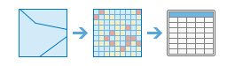

A análise raster permite-lhe efetuar análise de conjuntos de dados raster de grandes dimensões utilizando o ArcGIS Image Server. Isto permite-lhe analisar mais dados, mais depressa, aproveitando a potência do servidor.Os conjuntos de ferramentas atualmente disponíveis através da experiência de utilizador web Portal for ArcGIS são Resumir Dados, Analisar Padrões, Usar Proximidade, Analisar Imagem, Analisar Terreno, Gerir Dados, Aprendizagem Profunda e Análise Multidimensional.
Resumir Dados
Estas ferramentas são utilizadas para calcular estatísticas para uma camada raster dentro dos limites de área (zonas) definidos por si.
- Resumir Raster Em calcula estatísticas para células raster que se localizam em limites de área definidos.
- Estatísticas de Zona como Tabela resume os valores de um raster dentro das zonas de outro conjunto de dados e comunica os resultados numa tabela.
Resumir Raster Em |

|
Esta ferramenta resume os valores de um raster dentro das zonas de outro conjunto de dados.
Estatísticas de Zona como Tabela |
 |
Esta ferramenta resume os valores de um raster dentro das zonas de outro conjunto de dados e comunica os resultados numa tabela.
Analisar Modelos
Estas ferramentas ajudam-no a identificar, quantificar, e visualizar modelos espaciais nos seus dados.
- Calcular Densidade considera quantidades conhecidas de determinado fenómeno e cria um mapa de densidade espalhando estas quantidades pelo mapa.
- Interpolar Pontos prevê valores em novos locais baseados em medições encontradas numa colecção de pontos.
Calcular Densidade |

|
A análise de densidade considera quantidades conhecidas de determinado fenómeno e cria um mapa de densidade espalhando estas quantidades pelo mapa. Pode usar essa ferramenta, por exemplo, para mostrar a concentração de quedas de raios ou tornados, o acesso a serviços de cuidados de saúde, e as densidades populacionais.
Interpolar Pontos |

|
Esta ferramenta permite-lhe prever valores em novos locais baseados em medições encontrados numa colecção de pontos. A ferramenta leva dados de ponto com valores em cada ponto e retorna zonas classificadas pelos valores previstos. Pode usar esta ferramenta, por exemplo, para prever os níveis de precipitação numa bacia hidrográfica com base em medições feitas em pluviómetros individuais.
Utilizar Proximidade
Estas ferramentas ajudam a responder a algumas das perguntas mais comuns colocadas em análise espacial: O que é que está perto do quê? e Qual é o melhor percurso?
- Calcular Distância calcula a distância euclideana, direção e alocação de uma origem única ou de um conjunto de origens.
- Determinar a Melhor Rede de Custo de Viagem calcula a rede ótima de custo a partir de um conjunto de regiões de entrada.
- Determinar Custo de Viagem como Polilinha calcula o percurso de polilinhas de menor custo entre origens e destinos conhecidos.
- Acumulação de Distância calcula a distância acumulada para cada célula até às origens, permitindo a distância em linha reta, distância de custo, distância de superfície verdadeira, bem como fatores verticais e horizontais.
- Atribuição de Distância calcula a atribuição de distâncias para cada célula até às origens fornecidas com base na distância em linha reta, distância de custo, distância de superfície verdadeira, bem como em fatores verticais e horizontais.
- Melhor Percurso Como Linha calcula o percurso ideal dos destinos às origens como uma linha.
- Melhor Percurso Como Raster calcula o percurso ideal dos destinos às origens como um raster.
- Ligações de Região Ideais calcula a rede de conectividade ideal entre duas ou mais regiões de entrada.
Calcular Distância |

|
Esta ferramenta calcula distância euclideana, direção e alocação de uma única origem ou de um conjunto de origens.
Determinar Rede Ótima de Custo de Viagem |

|
Esta ferramenta calcula a rede de custo ótimo a partir de um conjunto de regiões de entrada.
Determinar Percurso de Custo de Viagem Como Polilinha |

|
Esta ferramenta calcula o percurso de polilinha de menor custo entre destinos e origens.
Acumulação de Distância |

|
Esta ferramenta calcula a distância acumulada para cada célula até às origens, permitindo a distância em linha reta, distância de custo, distância de superfície verdadeira e fatores verticais e horizontais.
Atribuição de Distância |

|
Esta ferramenta calcula a atribuição de distâncias para cada célula até às origens fornecidas com base na distância em linha reta, distância de custo, distância de superfície verdadeira e fatores verticais e horizontais.
Melhor Percurso Como Linha |

|
Esta ferramenta calcula o percurso ideal dos destinos às origens como uma linha.
Melhor Percurso Como Raster |

|
Esta ferramenta calcula o percurso ideal dos destinos às origens como um raster.
Ligações de Região Ideais |

|
Esta ferramenta calcula a rede de conectividade ideal entre duas ou mais regiões de entrada.
Analisar Imagem
A seguinte ferramenta na categoria de ferramentas Analisar Imagem ajuda-o a analisar imagens:
- Monitorizar Vegetação deteta a cobertura de vegetação relativa numa imagem com base em operações aritméticas nas bandas. Vários índices de vegetação estão disponíveis para análise de imagem.
Monitorizar Vegetação |

|
Efetua uma operação aritmética nas bandas de uma camada raster multibanda para revelar informações de cobertura de vegetação.
Analisar Terreno
Estas ferramentas ajudam-no a analisar superfícies de raster.
- Calcular Inclinação calcula o declive do terreno.
- Derivar Aspeto calcula a direção da inclinação mais acentuada para cada local.
- Criar Viewshed identifica o que pode ser visto a partir de qualquer ponto da paisagem.
- Watershed calcula a área de contribuição acima de locai(s) identificado(s) numa superfície.
Calcular Inclinação |

|
Identifica uma superfície que apresente a inclinação dos dados de elevação introduzidos. Inclinação representa a taxa de mudança de elevação por cada célula de modelo digital de elevação (digital elevation model -DEM).
Derivar Aspeto |

|
Identifica a direção de inclinação descendente da taxa máxima de mudança em valor desde cada uma das células até às respetivas células vizinhas. Aspeto pode ser visto como a direção da inclinação.
Criar Viewshed |

|
Determina os locais, numa superfície de raster, que são visíveis para um conjunto de observadores.
Área de Separação de Águas |

|
Determina a área de contribuição acima de um conjunto de células num raster.
Gerir Dados
Esta ferramenta é utilizada para a administração de dados geográficos, e para conciliar os dados antes da análise.
- Extrair Raster recorta porções de um conjunto de dados raster para uma análise mais aprofundada.
- Voltar a Cartografar Valores atribui diferentes valores a células raster.
- Converter Elemento para Raster transforma dados vetoriais em dados raster.
- Converter Raster para Elemento transforma dados raster em vetoriais.
- Amostra extrai dados em localizações definidas a partir de um raster, ou conjunto de raster.
Extrair Raster |

|
Extrair células de um raster com base no valor, no formato, ou na extensão de outro conjunto de dados.
Voltar a Cartografar Valores |

|
Alterar os valores individuais ou de intervalos dos valores de células para novos valores.
Converter Elemento para Raster |

|
Criar um novo conjunto de dados raster a partir de um conjunto de dados de elementos existente.
Converter Raster Para Elemento |

|
Criar um novo conjunto de dados de elementos a partir de um conjunto de dados raster existente.
Amostra |

|
Cria uma tabela ou classe de elementos de pontos com valores de dados em localizações definidas extraídos a partir de um raster ou conjunto de rasters.
Aprendizagem Profunda
Estas ferramentas são utilizadas para detetar elementos específicos numa imagem ou para classificar píxeis num conjunto de dados raster. Aprendizagem profunda é um tipo de método de aprendizagem máquina de inteligência artificial, que deteta elementos nas imagens utilizando múltiplas camadas nas ligações neuronais, onde cada camada é capaz de extrair um ou mais elementos únicos na imagem. Estas ferramentas consomem os modelos que foram treinados a detetar elementos específicos em estruturas de aprendizagem profunda de terceiros—tal como o TensorFlow, o CNTK e o Keras e emitem elementos ou mapas de classe.
- Classificar Píxeis Utilizando Aprendizagem Profunda produz um raster classificado utilizando um modelo treinado de aprendizagem profunda.
- Detetar Objetos Utilizando Aprendizagem Profunda produz uma classe de elementos contendo objetos que encontra num raster de entrada utilizando um modelo treinado de aprendizagem profunda.
- Classificar Objetos Utilizando Aprendizagem Profunda produz uma classe de elementos ou tabela em que a cada objeto de entrada num raster de entrada seja atribuída uma classe de rótulos um modelo de aprendizagem profunda treinado.
Classificar Píxeis Utilizando Aprendizagem Profunda |

|
Esta ferramenta executa um modelo treinado de aprendizagem profunda num raster de entrada para produzir um raster classificado e cada píxel válido tem atribuída uma classe de rótulos.
Detetar Objetos Utilizando Aprendizagem Profunda |

|
Esta ferramenta executa um modelo treinado de aprendizagem profunda num raster de entrada para produzir uma classe de elementos que contém os objetos que encontra. Os elementos podem ser caixas delimitadoras ou polígonos em torno dos objetos encontrados ou pontos no centro dos objetos.
Classificar Objetos Utilizando Aprendizagem Profunda |

|
Esta ferramenta executa um modelo treinado de aprendizagem profunda num raster de entrada e numa classe de elementos opcionais para produzir uma classe de elementos ou tabela em que cada objeto de entrada tem atribuída uma classe de rótulos.
Análise Multidimensional
As ferramentas do conjunto de ferramentas de Análise Multidimensional permitem-lhe efetuar análises em dados científicos em múltiplas variáveis e dimensões.
Os dados multidimensionais representam dados capturados em vários momentos, profundidades e alturas. Este tipo de dados é normalmente utilizado em ciências atmosféricas, oceanográficas e da terra. Com este conjunto de ferramentas, pode analisar dados raster multidimensionais em múltiplos formatos, incluindo netCDF, HDF, GRIB, o conjunto de dados de mosaicos multidimensional e Cloud Raster Format (CRF) da Esri.
A tabela seguinte apresenta as ferramentas de análise multidimensional e fornece uma breve descrição de cada uma delas.
- Agregar Raster Multidimensional gera um conjunto de dados raster multidimensional ao agregar variáveis de raster multidimensional já existentes a uma dimensão.
- Gerar Anomalia Multidimensional calcula a anomalia para cada secção num raster multidimensional para gerar um raster multidimensional.
- Gerar Raster de Tendência estima a tendência para cada píxel ao longo de uma dimensão para uma ou mais variáveis num raster multidimensional.
- Prever através da Utilização de um Raster de Tendência calcula um raster multidimensional previsto utilizando o raster de tendência da ferramenta Gerar Raster de Tendência.
- Encontrar Estatísticas de Argumentos extrai o valor de dimensão ou índice de faixa na qual uma determinada estatística é obtida para cada píxel num raster multidimensional ou multifaixa
Agregar Raster Multidimensional |

|
Esta ferramenta gera um conjunto de dados raster multidimensional ao agregar variáveis de raster multidimensional já existentes a uma dimensão.
Encontrar Estatísticas de Argumentos |

|
Esta ferramenta extrai o valor de dimensão ou índice de faixa na qual uma determinada estatística é obtida para cada píxel num raster multidimensional ou multifaixa
Gerar Anomalia Multidimensional |

|
Esta ferramenta calcula a anomalia para cada secção num raster multidimensional para gerar um raster multidimensional.
Gerar Raster de Tendência |

|
Esta ferramenta estima a tendência para cada píxel ao longo de uma dimensão para uma ou mais variáveis num raster multidimensional.
Prever Através da Utilização de um Raster de Tendência |

|
Esta ferramenta calcula um raster multidimensional previsto utilizando o raster de tendência da ferramenta Gerar Raster de Tendência.